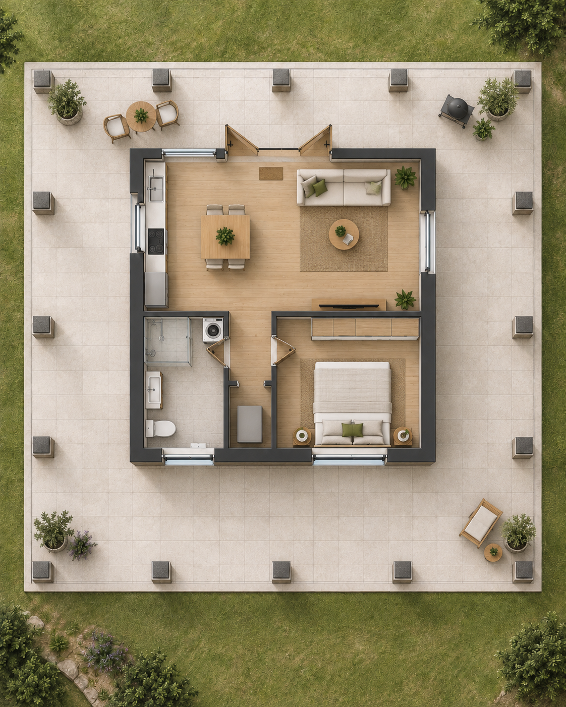
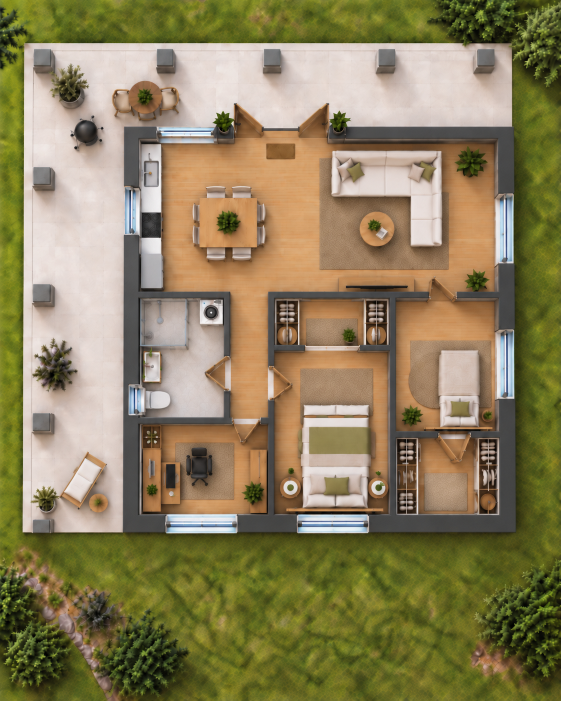
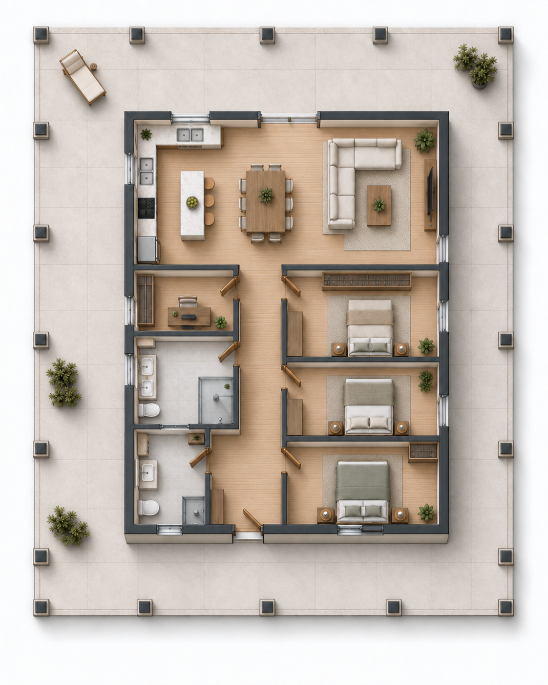
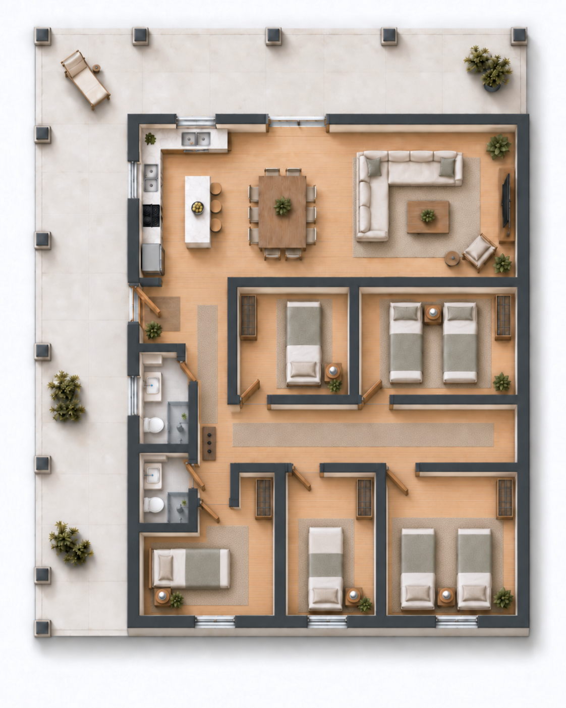
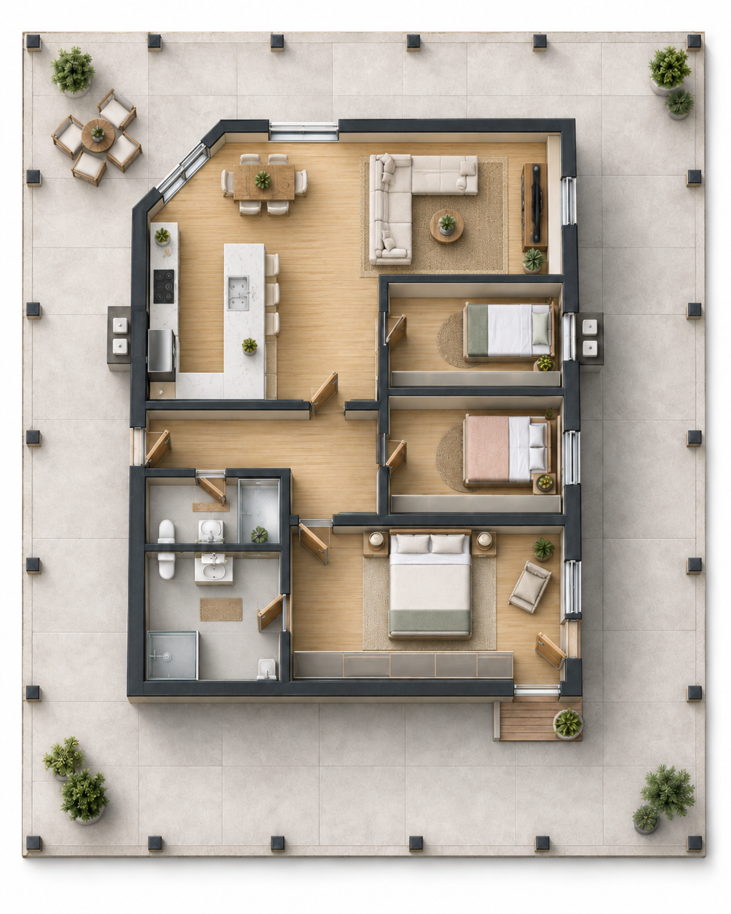

20 Hektar mit mehreren Entwicklungsansätzen
Die Granja del Sol ist bereits Wohnort, landwirtschaftlich nutzbare Fläche und Naturgrundstück zugleich. Für Käufer mit unternehmerischem Blick kommen zusätzlich die vorbereiteten Bauflächen und die Größe des Areals als Ausgangspunkt für unterschiedliche Konzepte hinzu.
Vorhandene Substanz statt grüner Wiese
Die folgenden Ideen sind keine Renditeversprechen und keine fertigen Projektplanungen. Sie zeigen, welche Ausgangspunkte ein Käufer bereits vorfindet und welche Nutzungsszenarien sich daraus grundsätzlich weiterdenken lassen.
Bezugsfertiges Haupthaus
Das bestehende Haus kann als privater Wohnsitz, Betreiberwohnung oder Basis während einer schrittweisen Entwicklung dienen.
Vorbereitete Bauflächen
Ein kleinerer Bungalow sowie eine größere Bodenplatte bieten bereits konkrete Ansatzpunkte für zusätzliche Gebäude.
Unterschiedliche Flächentypen
Acker, Weiden, Wohnbereich und Wald ermöglichen Konzepte, bei denen nicht die gesamte Fläche dieselbe Funktion erfüllen muss.
Die vorhandenen Bodenplatten als Startpunkt
Kleine Bodenplatte: eine Fläche, unterschiedliche Ausbaukonzepte
Die beiden folgenden Visualisierungen beziehen sich ausschließlich auf dieselbe kleinere Bodenplatte. Sie zeigen bewusst zwei deutlich unterschiedliche Strategien: einmal einen kompakten Baukörper mit sehr viel überdachtem Außenraum und einmal eine stärkere Nutzung der vorhandenen Fläche als Innenraum.
Denkbare Rollen reichen vom Ferien- oder Gästehaus über eine separate Wohneinheit bis zu einem kleinen Familienhaus. Die bereits angelegten Abflüsse sowie die vorhandenen Fundamentachsen müssen bei einer konkreten Planung berücksichtigt werden.
Zwei Varianten derselben kleinen Bodenplatte


Große Bodenplatte: drei mögliche Nutzungskonzepte
Auch die größere Bodenplatte ist nicht auf den früheren Grundriss festgelegt. Die folgenden drei Darstellungen zeigen dieselbe bauliche Ausgangslage mit unterschiedlichen Schwerpunkten. Küche und Bäder bleiben jeweils in den durch die vorhandenen Abflüsse vorgegebenen Bereichen; die übrige Raumaufteilung wird unterschiedlich genutzt.
Mehr Fläche für unterschiedliche Konzepte
Ein älterer Entwurf nutzt innerhalb der deutlich größeren überdachten Gesamtfläche ungefähr 98 m² als Innenbereich. Am äußeren Rand sind Anschlüsse für Säulen vorbereitet; zusätzlich bestehen mehrere konstruktiv interessante Fundamentachsen.
Damit lässt sich die Platte sowohl privat als auch für stärker auf Gäste oder gemeinschaftliche Nutzung ausgerichtete Konzepte weiterdenken. Die Bilder sind bewusst Beispiele und keine Vorgabe für eine spätere Ausführung.




Nicht nur Gebäude weiterdenken
Bei 20 Hektar kann ein Entwicklungskonzept auch die Flächen selbst einbeziehen. Denkbar wäre beispielsweise, einzelne Bereiche stärker landwirtschaftlich oder touristisch zu nutzen, zusätzliche kleine Unterkünfte in geeigneten Bereichen zu errichten oder langfristig eine Aufteilung von Teilflächen zu untersuchen.
- ca. 2 Hektar Ackerfläche als eigener landwirtschaftlicher Baustein
- ca. 4,5 Hektar Weidefläche mit vorhandener Unterteilung und natürlichen Tränken
- ca. 1,1 Hektar direkter Wohnbereich
- ca. 10 Hektar Wald als Natur-, Forst- oder Rückzugsbereich
- zwei Zufahrten als interessanter Ausgangspunkt für unterschiedliche Nutzungsbereiche
Geplante Visualisierung: illustrative Flächenentwicklung
Auf dem Luftbild wollen wir beispielhaft zeigen, wie Teilbereiche als Wohnen, Feriennutzung, Landwirtschaft oder mögliche spätere Lote gedacht werden könnten – ausdrücklich ohne den Eindruck einer bereits genehmigten Parzellierung zu erzeugen.
Vom Gedanken zum Projekt
Wer ein konkretes Investitionsmodell verfolgt, sollte die dafür relevanten technischen, rechtlichen und wirtschaftlichen Fragen projektbezogen prüfen. Die Website soll Potenziale sichtbar machen, nicht diese Prüfung ersetzen.
Bau & Statik
Fundamente, bestehende Eisenanschlüsse, Abflüsse und die gewünschte Dach- beziehungsweise Wandkonstruktion müssen zur konkreten Planung passen.
Genehmigung & Teilung
Eine gewerbliche Nutzung, weitere Bebauung oder eine Aufteilung in separate Lote wäre vor Umsetzung mit den zuständigen Stellen und Fachleuten zu klären.
Wirtschaftlichkeit
Baukosten, Nachfrage, Betrieb, Vermietung oder mögliche Verkaufspreise hängen vom gewählten Projekt und vom Markt zum jeweiligen Zeitpunkt ab.
Eine Ausgangslage – verschiedene Entwicklungswege
Die Fakten zum Objekt bleiben im vollständigen Exposé. Diese Seite soll nur greifbarer machen, welche Fragen ein Käufer mit eigenen Projektideen weiterverfolgen könnte.
Zurück zum vollständigen Exposé